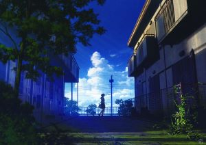

Amadeus
Tao, but also, non-Heng Dao also. First name, can be named also, non-permanent name also. "Nothing", the beginning of the name heaven and earth; "being", the mother of all things. Therefore there is always no desire to see its wonders; there is always desire, to look at its delusions. The two are the same name and the same name, the same name is xuan. Mysterious and mysterious, the door of all wonders.
Follow Me
修改日期：2022/5/22
By Amadeus
It's much more difficult to judge oneself than to judge others.
审判自己比审批别人要难得多。
Every coin has two sides everything has two sides.every thing has two handles.
任何事情都有两面性。
Only they who fulfill their duties in everyday matters will fulfill them on great occasions.
只有在日常生活中尽责的人才会在重大时刻尽责。
Sow nothing, reap nothing.
春不播，秋不收

The things I want to know are in books;mybest friend is the man who'll get me a book I ain't read.
我想了解的知识都在书里面；谁能给我弄一本我没有读过的书，谁就是我最好的朋友。
If a man empties his purse into his head, no one can take it from him.
如果一个人倾其所有以求学问，那么这些学问是没有人能拿走的。